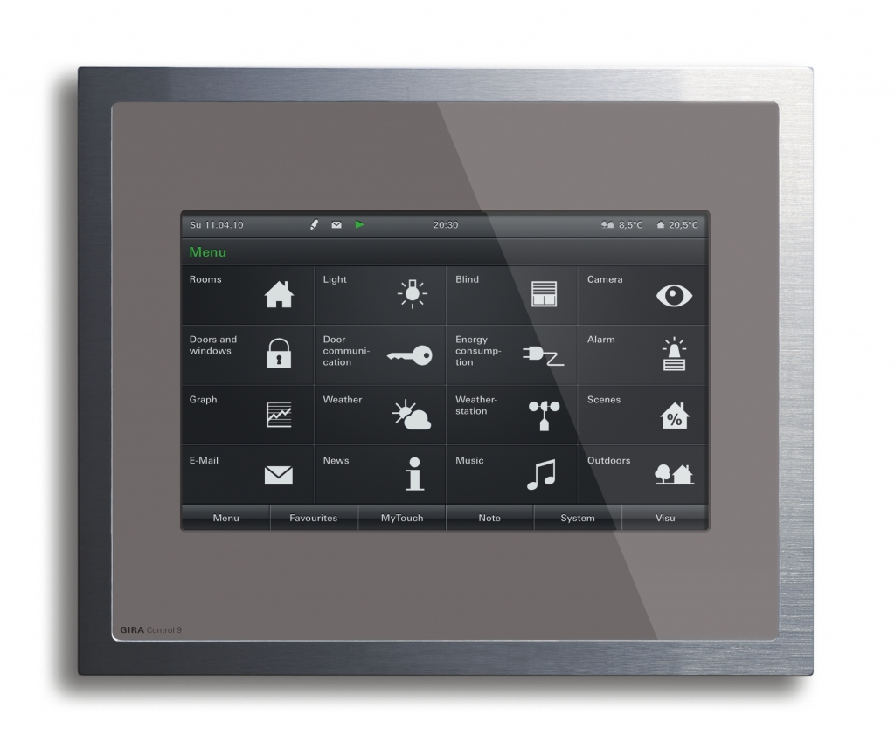

Управление системой управления умный дом может осуществляться несколькими способами:
Через приложение на смартфоне. В этом случае отдавать команды технике можно из любой точки мира.
При помощи компьютера или ноутбука. Для этого на него устанавливается специальное ПО.
Через сенсорную панель. Она располагается непосредственно на центральном контроллере.
С помощью дистанционного пульта.
Голосом. Современные комплексы умный дом оснащаются системой распознавания речи. Достаточно, находясь в доме, произнести заданное слово, и программа отдаст команду технике.
Чаще смарт-комплексы оснащаются одновременно несколькими способами управления.
Конкретный набор оборудования, входящий в умный дом, зависит от модели и предназначения системы. Однако выделяют несколько элементов, которые присутствуют в любой комплектации.
|
Изображение |
Название |
Описание |
|
|
Контроллер |
Его другое название – хаб. Это устройство собирает и анализирует информацию от остального оборудования. Оно также раздает задачи всем приборам согласно программе. Это своего рода мозг всей системы. |
|
|
Датчики |
Они улавливают изменение состояния окружающей среды, включение и выключение аппаратуры. В дальнейшем собранную информацию они передают на контроллер. |
|
|
Актуаторы |
Эти устройства получают команды с контролера и отвечают за их выполнение. Одним из примеров актуатора служит электрическое реле, включающее и выключающее по сигналу свет в помещении. |
|
 |
Устройства управления |
Могут быть различными: сенсорные панели, пульты ДУ, кейпады и прочие. |
В умный дом может быть включена вся бытовая техника, имеющаяся в квартире. Подробнее о составляющих системы и их предназначении рассказано в видеоролике.
Управление освещением – одна из базовых функций, которая входит в большинство стандартных комплектов умного дома. Но она может монтировать и отдельно. Тогда программа будет носить имя «Умный свет». Она имеет следующие возможности:
Изменение уровня освещенности в комнатах.
Автоматическое срабатывание выключателя света с наступлением времени сна.
Управление наружным освещением здания.
Включение света при входе человека в помещение.
Дистанционное включение и выключение света в отдельных помещениях.
Удаленное управление электропитанием дома через интернет.
Установка такой системы позволяет продлевать срок службы оборудования и экономить электроэнергию. В функционал смарт-света может входить включение резервных источников питания в аварийных ситуациях, а также экстренное отключение всей сети.
Для создания такого комплекса потребуется контроллер, датчики движения, диммеры, аккумуляторы. Умные лампы внешне ничем не отличаются от обычных, но в них присутствует модуль для автоматического управления. К нему подсоединяется и датчик движения.
Примером такого оборудования стал комплект Smart Lighting Starter Kit . Он включает в себя регулятор яркости освещения, а также связующий модуль, который можно подключать к другому оборудованию. Весь комплекс основан на беспроводной связи. Он управляется с дистанционного пульта, а также при помощи смартфона.
Технология умный дом распространяется и на системы безопасности. Она позволяет в автоматическом режиме контролировать состояние сигнализации, камер слежения, включать оповещение при пожаре, а также коммунальных авариях. Среди преимуществ внедрения такого оборудования выделяют:
Исключается вероятность того, что хозяин ушел из дома и забыл включить сигнализацию. Охранное оборудование включится автоматически, как только закроется входная дверь.
Управлять системой можно дистанционно с мобильного телефона.
В случае несанкционированного проникновения в жилье система отправит на телефон владельца сообщение или даже снимок человека, вошедшего в дом.
Видео со всех камер наблюдения записываются в память устройства и при необходимости их легко просмотреть дистанционно.
Есть возможность поставить датчики протечки воды, утечки газа, короткого замыкания в электросети и прочих. В аварийной ситуации коммуникации автоматически перекрываются.
В комплект системы безопасности может быть заложена и дополнительная функция – имитация присутствия. Для кражи преступники выбирают время, когда хозяев нет дома. Чтобы определить этот момент, они часто следят за окнами квартиры. Умный дом способен автоматически открывать и закрывать шторы, включать свет и телевизор, при нажатии на дверной звонок будет раздаваться громкий собачий лай. Все это отпугнет воров.
Подобное оборудование в различной комплектации предлагает компания Rubetek. Самым дешевым оказывается набор умного дома, состоящий из видеокамеры, датчиков движения и протечки. Оборудование беспроводное и работает через Wi-Fi. Его цена в среднем составит 10 000 рублей. Для однокомнатной квартиры такой аппаратуры будет достаточно.
На современном рынке представлено большое количество умной техники от кофеварок до сложных мультимедийных систем. Управлять ей можно при помощи приложения на смартфоне. Сигналы передаются через интернет. Среди преимуществ внедрения таких технологий выделяют:
Постоянный контроль за работоспособностью приборов. В случае неполадок, оборудование отправит уведомление на телефон владельца.
Возможность дистанционного включения. К примеру, можно запустить стиральную машину, находясь на работе или подать сигнал чайнику при приближении к дому.
Постоянное обновление ПО. Это даст возможность варочным панелям, посудомоечным машинам, мультиваркам и другой технике постоянно совершенствовать свои программы.
Возможность управления голосом.
Все умные приборы в доме легко подключаются к одному контроллеру. К примеру, на одной из последних выставок компания Whirlpool представила платформу, позволяющую подключать технику различных производителей. Управлять всем оборудованием можно из любой точки мира. При завершении заданной программы прибор отправляет владельцу уведомление.
Одной из востребованных функций умного дома становятся видеоняни. С их помощью можно следить за поведением ребенка, престарелого члена семьи или домашнего питомца.
Оборудование делится на два блока: передатчик сигнала и приемник. Первый включает в себя вайфай-камеру. Она записывает все происходящее в комнате и передает изображение на приемник. Питание осуществляется от сети, батарейки или аккумулятора.
Приемник представляет собой монитор, на который и транслируется видео с камеры. Его диагональ чаще не превышает 7 дюймов. Современные системы позволяют также получать картинку непосредственно на телефон владельца.
Среди видеонянь хорошего качества и средней ценовой категории можно выделить Philips Avent. Оборудование работает от аккумулятора, заряда которого хватает на 10 часов бесперебойной работы. Сигнал передается на монитор, диаметром 2,7 дюйма. Это оборудование работает только при условии, что приемник и передатчик находятся на расстоянии не более 300 метров друг от друга. Удаленный контроль обеспечивает только оборудование премиум-класса, а стоит оно недешево.
Система умный дом в квартире позволяет осуществлять полноценный климат-контроль. После установки соответствующего оборудования нажатием одной кнопки удастся регулировать влажность и температуру воздуха, процесс кондиционирования, вентиляцию и другие параметры.
Сложность запуска такого оборудования состоит в необходимости предварительной разработки детального плана. Важно учесть все особенности помещений, расположение коммуникаций и прочие тонкости, чтобы система могла полноценно функционировать.
Требуется установить термодатчики. Они отслеживают температуру в помещении. В дешевых наборах умного дома используются датчики-кабели. Их стоимость варьируется от 300 до 500 рублей за штуку. Беспроводные модели чаще оснащаются дополнительной функцией слежения за влажностью воздуха. Если такая возможность в термостате не предусмотрена, придется отдельно приобретать датчики влажности.
Для полноценного климат-контроля понадобятся также современные радиаторы и приточная вентиляция, оснащенная рекуператором. Если в помещении имеется теплый пол, то отслеживание его работы также можно поручить умному дому.
Подробнее о климатических устройствах рассказано в ролике.
Одним из элементов умного дома становятся смарт-розетки. Они представляют собой современные девайсы, позволяющие управлять электропитанием на расстоянии. Они позволяют дистанционно включать и выключать оборудование, открывать электронные замки на входных дверях, активировать сигнализацию и многое другое.
Существует несколько видов умных розеток:
Накладные. Они не требуют особого монтажа. Достаточно просто воткнуть их в обычную розетку и настроить аппаратуру. Этот гаджет можно легко переносить на новое место.
Установленные в стене. Такие конструкции не мобильны, их монтаж требует привлечения специалистов. Поэтому они пользуется меньшим спросом.
Самым популярным стал девайс Mi Smart Power Plug от компании Xiaomi. Он отличается компактностью и удобством эксплуатации. Управление розеткой осуществляться при помощи мобильного приложения. Имеется функция интеллектуального таймера, позволяющая отслеживать время включения и выключения.
Дорогие смарт-розетки имеют ряд дополнительных функций: учет потребления электроэнергии, таймер включения, датчик температуры и прочие.